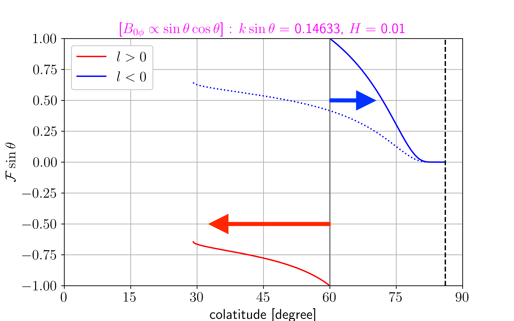
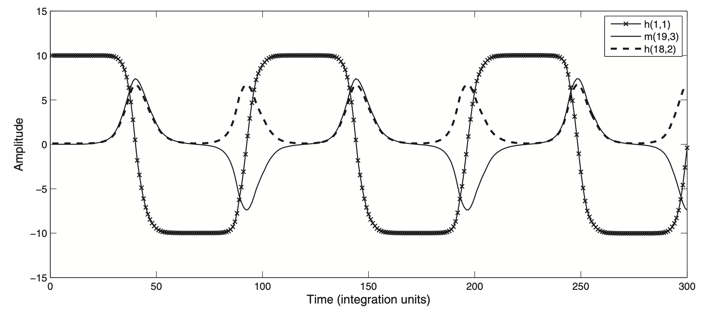

Two-dimensional ideal magnetohydrodynamic waves on a rotating sphere under a non-Malkus field: II. Pseudomomentum and mean fields evolution
深部・ダイナ合同セミナー ()
Two-dimensional (2D) ideal magnetohydrodynamic (MHD) waves on a rotating sphere under a non-Malkus field:
II. Pseudomomentum and mean fields evolution
-
[plain language イントロ]
- 回転する球を覆う極薄い磁気流体の層を伝播する波の研究
- 地球外核の最上部にあるかもしれない安定成層をイメージ
- このような波を地磁気変動の説明として使えるか?
中島 涼輔 (九州大学 大学院理学研究院)
- [O] Overview Mode / [F] Fullscreen Mode
- [G+number] Jump to Slide
Nakashima & Yoshida (Part. I, submitted)
- プレプリント
- arXiv, doi: 10.48550/arXiv.2310.01341
- EarthArXiv, doi: 10.31223/X5Z67T
本発表は, この論文 (NY-I) の続き (結果はまだない)
NY-I まとめ (1. 連続スペクトルに変化)
-
非
Malkus 磁場下では, 遅い磁気 Rossby 波
(地磁気変動に重要?)
の固有モードが消えてしまい
連続スペクトルに変化
($\bm{B}_0=B_{0\phi}\hat{\bm{e}}_\phi$: 背景磁場, $\theta$: 余緯度, $\phi$: 方位角)

NY-I まとめ (2. 波線理論を考える)
-
それでは,
連続スペクトルが地磁気変動に重要? -
連続スペクトルに対応する波は
「磁場の影響 / 回転の影響」の比が
地球コア条件のとき波長が短い -
波線理論 (WKBJ 近似;
背景場よりも波の空間スケール小) で
波の伝播を調べた- 臨界緯度で波が吸収される
- 波束がもつ保存量
[色] 位相速度の向き
NY-I まとめ (3. 波束がもつ保存量 = 擬運動量?)
-
WKBJ 近似に使う小さいパラメータ:
「磁場の影響 / 回転の影響」の比
($\sim10^{-4}$ @地球コア; 6 年周期 torsional waves (Gillet+, 2010)) -
WKBJ 最低次 → 局所分散関係: $\mathcal{D}(\phi,
\theta, T, k, l, \hat{H})=0$
($\phi$: 方位角, $\theta$: 余緯度, $T$: 時間, $k$: 東西波数, $l$: 南北波数, $\hat{H}$: intrinsic 角周波数) -
WKBJ 次のオーダー
($M$: 波の振幅, $\bm{c}_\mathrm{g}$:
群速度)
\[\frac{\uppartial}{\uppartial T}\left(\frac{1}{k\sin\theta}\frac{\uppartial\mathcal{D}}{\uppartial\hat{H}}|M|^2\right)\,+\,\div\left(\frac{\bm{c}_\mathrm{g}}{k\sin\theta}\frac{\uppartial\mathcal{D}}{\uppartial\hat{H}}|M|^2\right)\,=\,0\]
- WKBJ 近似の下での擬運動量保存則に相当 (NY-II で示す予定)
擬運動量 (波の作用, 波の活動度; 呼び方いろいろ) とは?
※ ここからしばらくは MHD ではなく HD (hydrodynamics) の話
| $\mathcal{P}$ | 擬運動量密度 |
|---|---|
| $\bm{\mathcal{F}}$ | 波の運動量フラックス |
| $-D+S$ | 散逸 + ソース項 |
| $\bm{c}_\mathrm{g}$ | 群速度 |
| $U$ | 平均東西流 |
- $\bm{\mathcal{F}}$ から波の伝播経路 ($\bm{c}_\mathrm{g}$) を推測可
-
$-\div\bm{\mathcal{F}}$ から波による平均流の加速
($\uppartial U/\uppartial t$) がわかる
-
波が統計的に定常
($(\uppartial\mathcal{P}/\uppartial t)=0$)
なら
波の散逸 ($-D$) によって $\div\bm{\mathcal{F}}$ が生じる (非加速定理)
-
波が統計的に定常
($(\uppartial\mathcal{P}/\uppartial t)=0$)
なら
- 本研究 (MHD) でも似たような議論ができるのでは?
Holton-Lindzen-Plumb (HLP) モデル
(b) シアー流 + Newton 冷却
2 つの波が下方から伝播する場合の
平均流の時間発展
- Newton 冷却 ($\gamma$) 入り, シアー流 ($U(z)$) 中の内部重力波
- WKBJ 解析解より $\div\bm{\mathcal{F}}$ を計算 (or $\div\bm{\mathcal{F}}\,=\,-\gamma(\bm{\mathcal{F}}/\bm{c}_\mathrm{g})+S$ を解く)
- 臨界高度 ($U=c$) で波が吸収 ($-\div\bm{\mathcal{F}}$ 大) → 平均流加速
- 平均流の周期的変動が可能 (成層圏準 2 年周期振動の説明?)
平均流の時間発展式の補足
-
複スケール解析
($\varepsilon$: 線形波動の振幅, $U+\varepsilon
u_x+\mathcal{O}(\varepsilon^2)$)
- 線形波動の周期の時間スケール: $t_0=t$
- 平均流が変化する時間スケール: $t_2=\varepsilon^2 t$ (波にとっては一定)
-
$\mathcal{O}(\varepsilon^2)$ の式を東西平均, $t_0$
についての時間平均
($\widetilde{f}=(1/T_0)\int_0^{T_0}f\upd
t_0$)
\[\frac{\uppartial U}{\uppartial t_2}\,+\,\div\widetilde{\bm{\mathcal{F}}}\,=\,\nu\nabla^2U\,,\quad\mathcal{F}_z\,=\,\frac{1}{L}\int_0^L u_xu_z\upd x\]
- 粘性 $\nu\sim\mathcal{O}(\varepsilon^2)$, $\nabla^2U\sim\mathcal{O}(\varepsilon^0)$ を仮定
-
HLP モデルでは,
波と平均流の時間・空間スケールが
完全に分離していると仮定 (→ $\bm{\mathcal{F}}$ は WKBJ 解析解から計算)
Rossby 波クロマトグラフィー
初期値問題 (線形, $m=6$)
Rossby 波クロマトグラフィーのイメージ
- HLP モデルの南北伝播版 (本研究向き?)
- 傾圧不安定由来のソース項をもつ順圧 Rossby 波の伝播
本研究でやりたいこと
NY-I で連続スペクトルに対応する波の伝播について
詳しく調べたので何かしたい
「磁気」Rossby 波クロマトグラフィー はどうか?...
- 外核最上部安定成層より深い領域の対流をソース項に?
-
対流セルが多い緯度範囲 (?) から南北に波が伝播し
外核最上部の平均流が時間発展?
基礎方程式 (理想 MHD・球面 2D)
- 線形化した渦度方程式 w/ Lorentz 力
-
流体粒子の変位 $\bm{\xi}$ の式 (誘導方程式の代わり)
- 理想 MHD では, 磁力線は流体に「凍り付く」
-
[Note] なぜ変位の式? → 本研究で扱う理論の延長
- 一般化 Lagrange 平均理論 (e.g. Andrews & Mcintyre, 1978)
-
ダイナモ理論でオイラーとラグランジュを混ぜて扱う
(e.g. Moffatt, 1978; Roberts & Soward, 2006)
(理想 MHD・球面 2D での) 擬運動量保存則
-
渦度方程式 (線形) と変位 $\bm{\xi}$
の式を組み合わせて,
経度平均 ($\overline{f}=(1/2\uppi)\int_0^{2\uppi}f\upd\phi$)
($\bm{u}$: 速度摂動, $\bm{b}$: 磁場摂動, $\zeta$: 渦度摂動, $Z_0+2\varOmega_0\cos\theta$: 背景の絶対渦度,
$\rho_0$: 密度, $R_0$: コア半径, $\mu_\mathrm{m}$: 透磁率, $\theta$: 余緯度, $\phi$: 方位角)\[\begin{align*} \frac{\uppartial(\rho_0\mathcal{P}\sin\theta)}{\uppartial t}\,+\,\frac{1}{R_0\sin\theta}\frac{\uppartial(\mathcal{F}\sin\theta)}{\uppartial\theta}\,&=\,0\\ \mathcal{P}\,=\,-\overline{\zeta \xi_\theta}-\frac{\overline{\xi_\theta^2}}{2R_0}\frac{\upd(Z_0+2\varOmega_0\cos\theta)}{\upd\theta}\,,&\quad \mathcal{F}\,=\,\left(\rho_0\overline{u_\theta u_\phi}-\frac{\overline{b_\theta b_\phi}}{\mu_\mathrm{m}}\right)\sin\theta \end{align*}\] - これらを WKBJ 近似すると, NY-I で得られた保存則と一致
弱い散逸の下での WKBJ 解析解 (非粘性)
-
Ohm 散逸入り誘導方程式 (線形) で計算し直して,
WKBJ 近似 ($|\alpha|$:「磁場の影響 / 回転の影響」の比, $E_\eta\sim\mathrm{O}(|\alpha|^2)$ と仮定)\[\mathcal{F}\sin\theta\,\propto\,\frac{\operatorname{sgn}[l(\hat{H}^2-k^2\mathcal{B}^2\sin^2\theta)]}{2k\sin\theta}\exp\left[-2\int^\theta\left.E_\eta|\alpha|^{-2}\frac{[\hat{H}(k^2+\textcolor{red}{l^2})+k\sin\theta](k^2+\textcolor{red}{l^2})}{2l(\textcolor{red}{\hat{H}^2-k^2\mathcal{B}^2\sin^2\theta})}\right|_{\theta=\theta_*}\upd\theta_*\right]\]($\mathcal{F}$: 波の運動量フラックス, $k$: 東西波数, $l$: 南北波数, $\hat{H}$: intrinsic 角周波数,
$E_\eta|\alpha|^{-2}$: Ohm 散逸の大きさ ($\sim($Elsasser 数$)^{-1}$), $\mathcal{B}$: 背景磁場分布, $\theta$: 余緯度) -
臨界緯度 ($\hat{H}^2=k^2\mathcal{B}^2\sin^2\theta$,
$l^2\to\infty$) で $\mathcal{F}$ が急激に変化
(波が臨界緯度付近で平均流を加速) -
$\mathcal{F}$ を平均流の時間発展式に代入すれば,
波による平均流の時間変化を計算できる (!)
これで平均流の時間発展を計算する準備が整った?
Rossby 波クロマトグラフィーで困ってるところ
Rossby 波クロマトグラフィーのイメージ
-
HLP モデルと違って,
反射あり
- 近くで WKBJ 破綻 (e.g. NY-I)
-
反射をどう表現すべきか考え中
 ソース: $60^\circ$
臨界緯度: $85^\circ$
反射: $30^\circ$
東進波
東向き加速:
$-[\uppartial(\mathcal{F}\sin\theta)/\uppartial\theta]>0$
- いいアイデアがあったら教えてください
平均流の時間発展の雑な予想
波の固有関数
-
WKBJ 近似では
$\rho_0\mathcal{P}\sin\theta=(m/R_0)E/\hat{\omega}$
と
$\mathcal{F}=-(\rho_0\mathcal{P}\sin\theta)c_{\mathcal{g},-\theta}$ なので- 赤道側に進む東進波: 東向き加速
- 極側に進む西進波: 西向き加速
$E$: 摂動エネルギー, $c_{\mathcal{g},-\theta}$: 北向き群速度, $\rho_0$: 密度, $R_0$: コア半径, $\theta$: 余緯度)
平均流の時間発展だけじゃなく,
もう少し拡張したい...
(そもそも地磁気変動を議論したかった)
平均場ダイナモ (e.g. Moffatt, 1978)
| $A$ | 平均ベクトルポテンシャル |
|---|---|
| $\mathcal{E}$ | 平均誘導起電力 |
| $B$ | 平均東西磁場 |
- 波由来の $\mathcal{E}$ を計算すれば, 平均磁場の時間発展も議論できる?
-
[問題点]
$\mathcal{E}=0$ ?
- WKBJ では, 最低次で $\mathcal{E}=0$ になることを確認
- $\alpha$ はヘリシティ (要 3D) と関係
- 背景磁場の時間発展は今回あきらめる
Two-dimensional (2D) ideal magnetohydrodynamic (MHD) waves on a rotating sphere under a non-Malkus field:
II. Pseudomomentum and
mean
fields
flow evolution
タイトル変更
中島 涼輔 (九州大学 大学院理学研究院)
- [O] Overview Mode / [F] Fullscreen Mode
- [G+number] Jump to Slide
上手くいかなかった場合のプラン
プラン B (WKBJ 不使用, 時間スケールだけ分離)
- 強制 + 散逸ありの線形化した方程式を数値的に時間積分
- (統計的定常になった頃合いで?) $\mathcal{F}$, $\mathcal{E}$ を計算し時間平均
- 背景場の時間発展式で背景場を更新し, 1. に戻る
プラン C (スケール分離を仮定しない)
- 準線形近似モデルで, 波と平均場の相互作用に注目
準線形近似 (非線形項において
$(m,0)\to m$ と $(m,m)\to0$ のみ計算)
固有モード間の擬運動量についての直交性
- 線形化した式から得られる波の解: 固有モード
-
2 つの固有モードが共存する場合を考える
-
このとき, 運動エネルギー $\propto
\int_0^\uppi
(\overline{u_1^2}+\overline{u_2^2}+\textcolor{red}{2\overline{u_1u_2}})\sin\theta\upd\theta$
($u_i$: 固有モード $i$ (1 or 2) の速度, $\overline{f}=(1/2\uppi)\int_0^{2\uppi}f\upd\phi$, $\theta$: 余緯度, $\phi$: 方位角) -
一方, 擬運動量は 2 次の量なのに
$\int_0^\uppi(\mathcal{P}_1+\mathcal{P}_2)\sin^2\theta\upd\theta$
のまま
→ 擬運動量は固有モードごとに割り当てられる量 -
[理由] 線形化した式が以下のように表せるため
\[\frac{\uppartial}{\uppartial t} \begin{pmatrix}0 & 1\\1& \dfrac{1}{R_0\sin\theta}\dfrac{\upd(Z_0+2\varOmega_0\cos\theta)}{\upd\theta}\end{pmatrix} \begin{pmatrix}\zeta \\ \sin\theta\xi_\theta\end{pmatrix}=\Bigl(\text{自己共役作用素}\Bigr)\begin{pmatrix}\zeta \\ \sin\theta\xi_\theta\end{pmatrix} \]($\bm{\xi}$: 変位, $\zeta$: 渦度摂動, $Z_0+2\varOmega_0\cos\theta$: 背景の絶対渦度, $R_0$: コア半径)
-
このとき, 運動エネルギー $\propto
\int_0^\uppi
(\overline{u_1^2}+\overline{u_2^2}+\textcolor{red}{2\overline{u_1u_2}})\sin\theta\upd\theta$
擬運動量は線形シミュレーション (プラン B) の解析に便利
-
直交性により, 初期条件にどの固有モードが
どの程度含まれているかを特定可能 - エネルギーは, 離散モードの周波数差で振動
- [Note] MHD では, 擬エネルギーは直交性をもたない (たぶん)
MHD・球面 2D の弱非線形〜非線形計算のリスト
-
磁気 Rossby 波の 3 波共鳴,
5 波共鳴 (Raphaldini & Raupp, 2015;
Raphaldini+, 2019) 3 波共鳴 (Raphaldini & Raupp, 2015) -
(一般化) 準線形近似モデル
(Plummer+ ,2019)
-
非線形計算
(Cally, 2001;
Cally+, 2003, 2004; Dikpati+, 2004)
まとめ
-
連続スペクトルに対応する波と
平均流の相互作用を計算しようとしている -
現状, 背景磁場の時間発展は議論できないが,
コア表面流の研究に対して何か言えるかも
今後の予定
- 背景場の時間発展 (or 線形シミュレーション) コードの作成
- 前期の合同セミナーネタの続き
- 前期の合同セミナーネタを理想 MHD・球面 2D に使う
- MHD 浅水系 (背景磁場の時間発展可?)